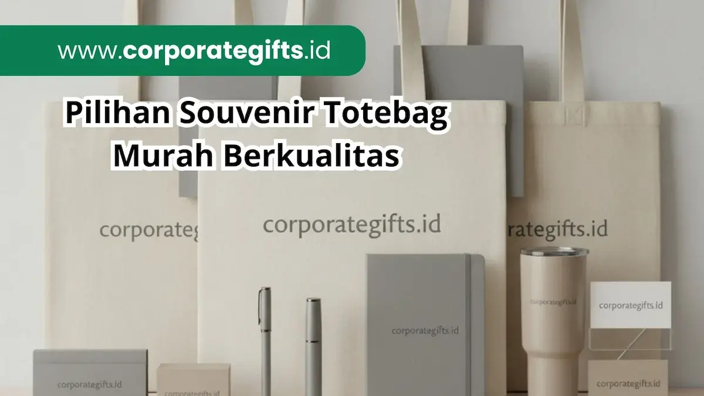

Corporate Gifts ID - Souvenir totebag murah adalah salah satu opsi bingkisan cinderamata paling efektif dan fleksibel dalam dunia pengadaan event korporat, dengan kisaran harga mulai dari Rp3.500 hingga Rp30.000 per pcs tergantung bahan, dimensi, dan volume pesanan. Seperti yang diulas dalam ulasan inspiratif tentang souvenir totebag acara perusahaan berdesain elegan, tas jinjing ini menjadi wadah serbaguna yang langsung menyatukan buku catatan, tumbler, dan pulpen seminar dalam satu genggaman praktis.
Keberhasilan penyelenggaraan workshop, seminar nasional, pameran expo B2B, hingga gathering tahunan instansi pemerintah sangat dipengaruhi oleh kenyamanan peserta saat membawa perlengkapan materi. Totebag tidak sekadar menjadi alat angkut, melainkan media iklan berjalan (walking billboard) yang terus mempromosikan merek perusahaan lama setelah acara berakhir.
Poin Kunci Pengadaan Souvenir Totebag:
- Efisiensi Anggaran Nyata: Harga mulai dari Rp3.500/pcs untuk bahan spunbond grosir, sangat ramah alokasi RAB instansi.
- Luas Area Cetak Maksimal: Permukaan tas yang rata dan luas memberikan visibilitas tinggi bagi logo korporat dan slogan kampanye.
- Daya Guna Ramah Lingkungan: Mendukung inisiatif bebas kantong plastik sekali pakai, dapat dicuci dan digunakan kembali hingga bertahun-tahun.
- Skalabilitas Produksi Cepat: Cocok untuk kebutuhan darurat (rush order) dalam jumlah ratusan hingga ribuan unit.
Faktor Penentu Harga Souvenir Totebag Seminar
Sebelum menerbitkan dokumen permintaan penawaran (RFQ), panitia pengadaan perlu memahami variabel utama yang memengaruhi struktur biaya produksi totebag:
- Karakteristik Bahan Dasar: Sebagaimana dijelaskan dalam analisis mendalam mengenai jenis material bahan souvenir totebag dan harganya, material spunbond non-woven adalah pilihan paling ekonomis, disusul blacu katun yang bertekstur alami, hingga kain kanvas tebal dan drill yang memiliki daya tahan premium.
- Dimensi dan Pola Potongan: Tas berukuran standar A4 (25x35 cm) tanpa lipatan samping tentu lebih murah dibanding ukuran 30x40 cm atau 35x45 cm yang dilengkapi gusset (alas samping) untuk memuat laptop atau binder tebal.
- Teknik Cetak dan Jumlah Warna: Sablon manual satu warna pada satu sisi adalah opsi paling hemat biaya. Penambahan sisi cetak kedua atau penerapan cetak digital full color DTF akan menambah komponen biaya produksi tinta.
- Kuantitas Pemesanan (Economies of Scale): Vendor memproduksi totebag dengan sistem rol kain dan cetak massal. Semakin besar kuantitas pesanan (di atas 100-500 pcs), semakin rendah biaya tetap cetak per unitnya.
Estimasi Harga Grosir Totebag Spunbond vs Blacu
Untuk memberikan gambaran anggaran bagi panitia acara, berikut adalah rincian estimasi harga grosir di pasaran berdasarkan volume pemesanan:
1. Totebag Spunbond Non-Woven (Ketebalan 75 GSM)
Pilihan utama bagi seminar mahasiswa, diklat kedinasan skala besar, atau jalan sehat massal:
- 50 pcs: Mulai Rp7.000 hingga Rp8.500 per pcs.
- 100 pcs: Mulai Rp5.500 hingga Rp7.000 per pcs.
- 500 pcs ke atas: Mulai Rp3.500 hingga Rp5.000 per pcs.
2. Totebag Kain Blacu Katun Super (Warna Broken White Alami)
Pilihan favorit untuk seminar korporat, komunitas kreatif, dan workshop bertema ramah lingkungan:
- 50 pcs: Mulai Rp15.000 hingga Rp18.000 per pcs.
- 100 pcs: Mulai Rp10.000 hingga Rp12.500 per pcs.
- 500 pcs ke atas: Mulai Rp7.000 hingga Rp9.000 per pcs.

Kain blacu katun memberikan kesan organik, ramah lingkungan, dan estetik dengan harga produksi yang tetap sangat kompetitif.
Tabel Komparasi Material, Harga, dan Daya Tahan
Berikut matriks perbandingan teknis antar jenis material totebag untuk memudahkan pengambilan keputusan:
| Jenis Material | Kisaran Harga Grosir | Daya Tampung Beban | Metode Cetak Terbaik | Kesesuaian Target Acara |
|---|---|---|---|---|
| Spunbond 75 gsm | Rp3.500 - Rp8.500 | Hingga 3-5 kg | Sablon manual rubber | Seminar massal, diklat kampus, expo B2C |
| Blacu Katun Super | Rp7.000 - Rp18.000 | Hingga 7-10 kg | Sablon pasta, DTF digital | Workshop korporat, pelatihan profesional |
| Kanvas Twill / Marsoto | Rp20.000 - Rp45.000 | Hingga 12-15 kg | Bordir komputer, sublimasi | Event eksekutif, merchandise onboarding VIP |
| Kain Drill American | Rp14.000 - Rp28.000 | Hingga 8-10 kg | Sablon discharge, bordir | Seragam tim lapangan, gathering karyawan |
Totebag Branded Fashion vs Totebag Custom B2B
Sering muncul pertanyaan mengapa perusahaan memilih memproduksi souvenir totebag custom daripada membeli produk retail bermerek mewah. Berikut perbandingan objektifnya:
- Totebag Branded Mewah (Longchamp, Coach, Goyard): Memiliki banderol harga jutaan rupiah (Rp1.500.000 hingga Rp15.000.000/pcs). Produk ini ditujukan untuk kebutuhan prestise fesyen personal, bukan untuk dibagikan secara massal kepada ratusan peserta acara.
- Souvenir Totebag Custom B2B: Didesain khusus sesuai identitas merek Anda (mencantumkan logo institusi, tagline acara, dan warna tema korporat) dengan biaya terjangkau mulai Rp3.500/pcs. Produk ini menghasilkan Cost Per Impression (CPI) yang luar biasa efisien karena langsung menyasar audiens dalam jumlah ratusan orang.
4 Strategi Mendapatkan Harga Terbaik dari Vendor Grosir
Untuk memastikan anggaran pengadaan seminar kit Anda tetap efisien tanpa mengorbankan kualitas produk, terapkan kiat praktis berikut:
- Satukan Kebutuhan Beberapa Divisi Sekaligus: Jika perusahaan Anda memiliki agenda seminar bulanan atau pelatihan divisi lain, lakukan pemesanan gabungan (bulk ordering) dalam satu PO besar agar mendapatkan tingkat harga grosir tertinggi.
- Optimalkan Jumlah Warna Desain Sablon: Batasi desain logo pada 1 atau 2 warna solid. Menggunakan teknik cetak monokromatik atau minimalis justru terlihat lebih eksklusif bagi kalangan profesional sekaligus menghemat biaya pembuatan film cetak.
- Gunakan Ukuran Standar Pola Kain: Ukuran 30x40 cm adalah standar pola potongan kain tanpa banyak limbah sisa (zero fabric waste). Meminta ukuran custom yang ganjil sering kali menaikkan biaya bahan terbuang.
- Hindari Pemesanan Mendadak (Rush Order): Pesanlah setidaknya 2-3 minggu sebelum acara agar vendor tidak mengenakan biaya lembur produksi kilat.
Standar Mutu Jahitan dan Kerapatan Cetak Logo
Harga murah tidak boleh mengorbankan martabat nama besar perusahaan Anda. Pastikan vendor menerapkan standar kendali mutu ketat:
- Jahitan Silang X-Box pada Pangkal Tali: Tali jinjing harus dijahit dengan jahitan penguat berbentuk silang kotak agar tidak mudah putus saat tas diisi barang berat seperti laptop atau buku tebal.
- Obras Tepi yang Rapi: Bagian dalam tas tidak boleh memiliki benang yang bertumpuk atau tepian kain yang berserabut.
- Tinta Sablon Anti-Pecah: Tinta sablon harus memiliki daya lekat tinggi pada serat kain sehingga tidak mengelupas atau retak saat dicuci.
FAQ Seputar Souvenir Totebag Seminar Murah
Kesimpulan dan Solusi Totebag CorporateGifts.ID
Memilih souvenir totebag murah berkualitas adalah solusi strategis yang menjembatani efisiensi biaya acara dengan daya ungkit branding korporat yang tahan lama. Baik Anda membutuhkan tas spunbond ringan untuk ribuan peserta atau tas blacu katun premium untuk peserta workshop khusus, totebag selalu menjadi pilihan cinderamata yang dihargai dan digunakan secara berulang.
Percayakan produksi totebag dan perlengkapan acara Anda kepada CorporateGifts.ID. Kami menyediakan pilihan bahan bersertifikasi, jahitan rapi berstandar garmen, serta teknologi cetak logo mutakhir. Kunjungi halaman paket seminar kit lengkap kami atau minta penawaran harga resmi (RAB) melalui formulir RFQ Corporate Gifts ID sekarang juga!

Ditulis oleh: Arinda Zakia
Senior Corporate Gifting SpecialistSpesialis pengadaan cinderamata korporat dan konsultan pengadaan B2B di CorporateGifts.ID. Berpengalaman lebih dari 8 tahun dalam manajemen merchandise promosi, kurasi goodie bag seminar, dan efisiensi anggaran pengadaan perusahaan multinasional serta instansi pemerintah.
Lihat Profil Lengkap & Panduan Lainnya